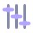

WeftA demo session has been added so you can try the scenarios right away.
Weft is bring-your-own-key. Pick a provider (OpenAI, Anthropic, Gemini, DeepSeek, Moonshot or local Ollama) and paste your key in Settings.
No key handy? Choose Chrome Built-in AI to try summarize/rewrite with no key on Chrome 138+.
Open the side panel (the Workbench) from the toolbar, or click the extension icon for the quick collection basket.
Tip: right-click any selected text → Save to Session, or use the floating toolbar that appears on selection.